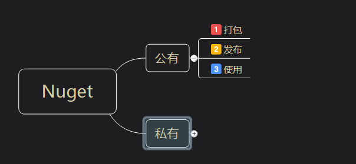
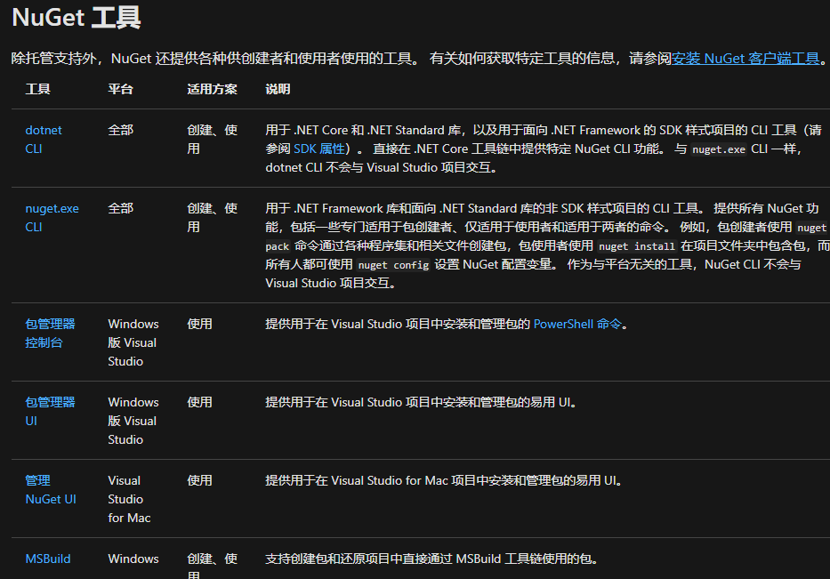
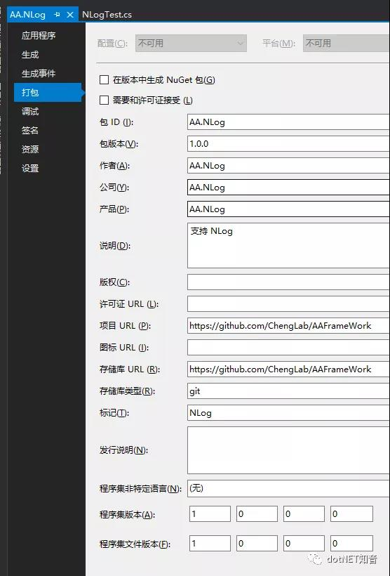
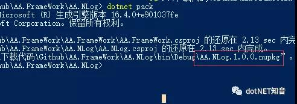
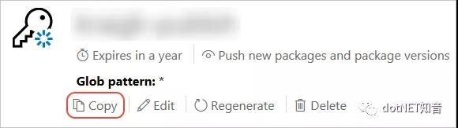
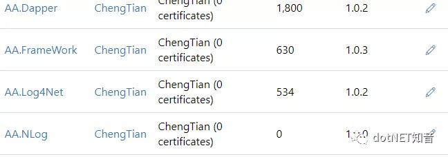
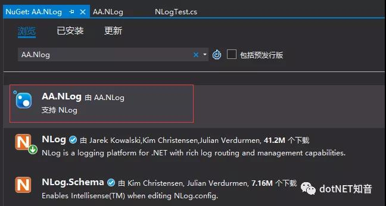

原文连接:https://www.cnblogs.com/chengtian/p/12014714.html

Nuget介绍
官网定义：NuGet是.NET的软件包管理器（免费）。NuGet客户端工具提供了生成和使用软件包的能力。NuGet Gallery 是所有软件包作者和消费者都使用的中央软件包存储库。
简单来说，nuget包解决了dll引用的问题，开发者可以通过打包，然后发布到公有主机或者私有主机上，供其他开发者使用。可以大大的提高创建一个.NET应用的效率。
想了解平时安装的nuget包，是如何产生的。需要了解几个角色。
-
创建者：包的作者，创建一个项目，最终生成一个后缀名为.nupkg的文件，里面包含了编译代码DLL、与该代码相关的其他文件以及描述清单如版本等信息。
-
Host 主机：nuget.org 作为公共主机，如果你也想发布一个包，供所有开发者使用的话，可以选择它。NuGet 自身负责在 nuget.org 中维护包含 100,000 多个唯一包的中央存储库。这些包每天供数以百万的 .NET/.Net Core 开发人员使用。私有主机上，比如团队内部几个人可以访问。
-
消费者：很好理解，就是我们从nuget获取包的开发者。
简单的总结下这几个角色的关系：创建者创建一个nuget包，并发布到主机上。然后使用者在可访问的主机上搜索安装nuget包到项目中，这样项目就可以利用包提供的功能。如图

工具的选择
目前提供的工具还是挺丰富的，下文使用dotnet CLI ，你也可以选择任意你习惯的工具

打包
准备工作，创建一个类库并命名为AA.Nlog。
1.配置包元数据 ，右键项目-》属性

在.csproj文件中，我们发现添加了一下属性：
<PropertyGroup>
<TargetFrameworks>net452;netstandard2.0</TargetFrameworks>
<Description>支持 NLog</Description>
<PackageProjectUrl>https://github.com/ChengLab/AAFrameWork</PackageProjectUrl>
<RepositoryType>git</RepositoryType>
<PackageTags>NLog</PackageTags>
<RepositoryUrl>https://github.com/ChengLab/AAFrameWork</RepositoryUrl>
<GeneratePackageOnBuild>false</GeneratePackageOnBuild>
</PropertyGroup>如果勾选了在版本中生成Nuget包选项框，则生成项目时会自动生成nuget包；包ID：是唯一的标识，用户搜索和使用就是通过包ID。包版本：会自动根据程序集版本生成，如果要更新包，只需要把版本号改大点即可。其他信息可以自行填写。
2.从项目中 生成nuget包（.nupkg文件），运行pack命令如下：
dotnet pack
nuget包已经生成了，什么是nupkg文件？.nuspec文件是包含程序包元数据的XML清单。此清单可用于构建包装并向消费者提供信息。清单始终包含在包装中。可以在微软文档中（https://docs.microsoft.com/en-us/nuget/reference/nuspec）找到有关nuspec的更多详细信息
发布包到公共Host
创建 API 密钥
-
登录你的 nuget.org 帐户，或创建一个帐户（如果你还没有帐户）。有关创建帐户的详细信息，请参阅个人帐户。
-
选择用户名（在右上角），然后选择“API 密钥”。
-
选择“创建” ，提供密钥名称，选择“选择范围”>“推送” 。输入“Glob 模式” *，然后选择“创建” 。
-
创建密钥后，选择“复制”，检索需要在 CLI 中使用的访问密钥 ：

使用dotnet CLI 发布nuget包
-
运行命令，指定包名称（唯一包 ID）并使用你的 API 密钥替换密钥值：
dotnet nuget push AA.NLog.1.0.0.nupkg -k qz2jga8pl3dvn2akksyquwcs9ygggg4exypy3bhxy6w6x6 -s https://api.nuget.org/v3/index.json-
发布过程结果
info : 正在将 AA.NLog.1.0.0.nupkg 推送到 'https://www.nuget.org/api/v2/package'...
info : PUT https://www.nuget.org/api/v2/package/
warn : All published packages should have license information specified. Learn more: https://aka.ms/deprecateLicenseUrl.
info : Created https://www.nuget.org/api/v2/package/ 2854 毫秒
info : 已推送包。这里 -k 代表API密钥， -s 代表源。在我们的例子中，源是nuget.org我们登录到nuget.org查看我们的软件包：

可以进行管理，发布之后，稍等几分钟会在nuget.org中进行搜索到
在vs中浏览我们的nuget软件包
管理nuget程序包->搜索我们刚发布的软件包，AA.Nlog。

如上图所示，该软件包已经可以使用。
希望这篇文章可以对你有所帮助！
参考：https://docs.microsoft.com/zh-cn/nuget/what-is-nuget